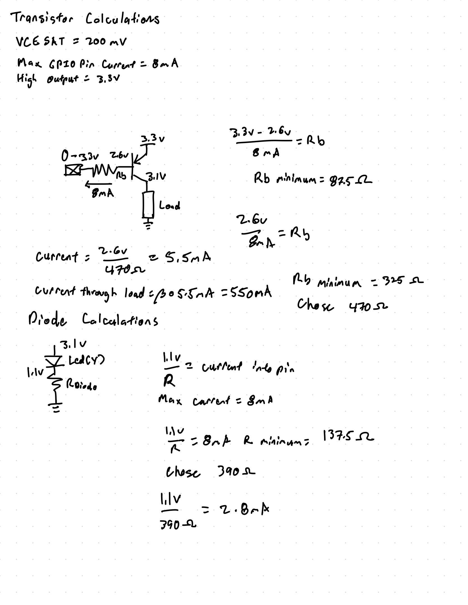
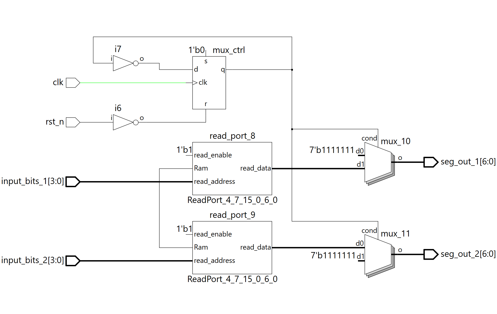

Lab 2
Table of Contents
Verilog Code 4.1 top 4.2 seven_seg_display 4.3 clock_divider 4.4 hsosc
Test Benches 5.1 testbench 5.2 seven_testbench
This it the Introduction
In this lab I using 2 sets of 4 dip switches I can control a dual seven segment display. One set of switches control the left digit while the other set control the other digit. This was accomplished using time multiplexing. In addition a set of 5 yellow LEDs indicated the sum of the two sets of dip switches in binary. Hours Spent: 8 Lab Fufills all requirements.
Schematic

Block Diagram

Verilog Code
This section contains verilog code for modules top seven_segment_display and three_led
top
/*
Title: top module for lab 2
Author: Kanoa Parker
Email: kanparker@g.hmc.edu
Date: 9/9/2024
Description: Top module for lab 2. Takes in inputs of 2 sets of 4 switches, s1 and s2. Outputs the sum of s1 and s2 as led. Using a time multiplexer the mux choses either to output either s1 or s2 as seg using seven_seg_display module. gate1 and gate1 go to transistor gates which control which set of leds get turned on.
*/
module top(
input logic [3:0]s1,
input logic [3:0]s2,
output logic [6:0]seg,
output logic [4:0]led,
output logic gate1, gate2,
output logic clk
);
//s1 is inputs of one set of 4 dip swithces
//s2 is inputs of other set of 4 dip switches
//seg is the output to drive seven segment display
// gate1 and gate2 go to base of BJT to control power to seven segment display
// clk is output used for testing
//sev_seg_in is the input to seven_seg_display module
logic [3:0]sev_seg_in;
//sev_seg_out is the output of seven_seg_display module
logic [6:0]sev_seg_out;
//instancing seven_seg_display
seven_seg_display seven_seg_counter(sev_seg_in,seg);
//instancing clock divider
clock_divider slow_clock(clk);
//muxing between s1 and s2
always_comb
case(clk)
1'b1: begin
sev_seg_in = s1[3:0];
gate1 = 1'b1;
gate2 =1'b0;
end
1'b0: begin
sev_seg_in = s2[3:0];
gate1 = 1'b0;
gate2 = 1'b1;
end
endcase
//sum of s1 and s2 to led
assign led = s1 + s2;
endmoduleTop module for lab 2. Takes in inputs of 2 sets of 4 switches, s1 and s2. Outputs the sum of s1 and s2 as led. Using a time multiplexer the mux choses either to output either s1 or s2 as seg using seven_seg_display module. gate1 and gate1 go to transistor gates which control which set of leds get turned on.
seven_segment_display
/*
Title: seven_seg_display
Author: Kanoa Parker
Email: kanparker@g.hmc.edu
Date: 9/9/2024
Description: Takes in 4 switch inputs and outputs control signal for a seven segment display
*/
module seven_seg_display(
input logic [3:0]s,
output logic [6:0]seg
);
//logic used for old boolean algebra method
logic A,B,C,D;
assign A = s[3];
assign B = s[2];
assign C = s[1];
assign D = s[0];
//old boolean algrebra method
/*
assign seg[6] = (~A&~C)&(B^D) | A&(~B&C&D | B&~C);
assign seg[5] = D&~(A^C) | B&(C&~D | A&~C&~D);
assign seg[4] = ~A&~B&C&~D | (A&B)&( ~C&~D | C);
assign seg[3] = (~A&D)& ~(B^C) | (A&~B)&(C^D) | B&( ~(A|C|D) | A&C&D);
assign seg[2] = (~A&~B&D) | (~A&B&~C) | (~A&B&C&D) | (A&~B&~C&D);
assign seg[1] = (~(A|B|C) & D) | (~A&~B&C) | (~A&B&C&D) | (A&B&~C);
assign seg[0] = ~(A|B|C|D) | (~A&~B&~C&D) | (~A&B&C&D);
*/
//case statement that map input to output
always_comb
case(s[3:0])
/// 0
4'b0000: seg[6:0] = 7'b0000001;
/// 1
4'b0001: seg[6:0] = 7'b1001111;
/// 2
4'b0010: seg[6:0] = 7'b0010010;
/// 3
4'b0011:seg[6:0] = 7'b0000110;
/// 4
4'b0100:seg[6:0] = 7'b1001100;
/// 5
4'b0101:seg[6:0] = 7'b0100100;
/// 6
4'b0110:seg[6:0] = 7'b0100000;
/// 7
4'b0111:seg[6:0] = 7'b0001111;
/// 8
4'b1000:seg[6:0] = 7'b0000000;
/// 9
4'b1001:seg[6:0] = 7'b0001100;
/// A
4'b1010:seg[6:0] = 7'b0001000;
/// B
4'b1011:seg[6:0] = 7'b1100000;
/// C
4'b1100:seg[6:0] = 7'b0110001;
/// D
4'b1101:seg[6:0] = 7'b1000010;
/// E
4'b1110:seg[6:0] = 7'b0110000;
/// F
4'b1111:seg[6:0] = 7'b0111000;
endcase
//see notes for segment conrispondice to led
endmoduleSeven segment display takes an input of four switches, s[3:0], and ouputs to light up the seven segment display, seg[6:0]
clock_divider
/*
Title: clock_divider
Author: Kanoa Parker
Email: kanparker@g.hmc.edu
Date: 9/9/2024
Description: Takes in the standard oscillator adn divides the clock using a counter to produce a clock at desired frequency
*/
module clock_divider(
input logic clk, reset,
output logic slow_clk
);
logic [31:0] counter = 0;
logic [31:0] P;
assign P = 32'b00000000000000010101111110010000;
// Simple clock divider
always_ff @(posedge clk, reset)
if(reset) begin
counter<=0;
slow_clk<=0;
end
else begin
counter <= counter + P;
end
assign slow_clk = counter[31];
endmoduleTakes in the standard oscillator adn divides the clock using a counter to produce a clock at desired frequency.
hsosc
/*
Title: hsosc
Author: Kanoa Parker
Email: kanparker@g.hmc.edu
Date: 9/9/2024
Description: high speed oscillator
*/
module hsosc(
output logic clk
);
logic int_osc;
logic pulse;
logic led_state = 0;
// Internal high-speed oscillator
HSOSC hf_osc (.CLKHFPU(1'b1), .CLKHFEN(1'b1), .CLKHF(int_osc));
assign clk = int_osc;
endmoduleVerilog code generates a high speed oscillator
Test Benches
test_bench

seven_testbench

##Oscilliscope Trace 
Notes

Code AI Provided first try
module time_multiplexed_decoder (
input logic clk, // Clock signal
input logic rst_n, // Active-low reset signal
input logic [3:0] input_bits_1, // First set of 4-bit input
input logic [3:0] input_bits_2, // Second set of 4-bit input
output logic [6:0] seg_out_1, // 7-segment output for the first set
output logic [6:0] seg_out_2 // 7-segment output for the second set
);
// 7-segment display encoding for common anode (active low segments)
// Assuming the 7 segments are ordered as ABCDEF-G
logic [6:0] seven_seg_decoder [15:0] = {
7'b1111110, // 0
7'b0110000, // 1
7'b1101101, // 2
7'b1111001, // 3
7'b0110011, // 4
7'b1011011, // 5
7'b1011111, // 6
7'b1110000, // 7
7'b1111111, // 8
7'b1111011, // 9
7'b1110111, // A
7'b0011111, // B
7'b1001110, // C
7'b0111101, // D
7'b1001111, // E
7'b1000111 // F
};
// Internal signals for multiplexing control
logic mux_ctrl; // Control signal to alternate between the two sets
// Time multiplexing logic to alternate between the two sets of inputs
always_ff @(posedge clk or negedge rst_n) begin
if (!rst_n) begin
mux_ctrl <= 0; // Reset control signal
end else begin
mux_ctrl <= ~mux_ctrl; // Toggle the control signal
end
end
// Drive the seven-segment display outputs based on the multiplexed input
always_comb begin
if (mux_ctrl) begin
// Decode the first set of input bits
seg_out_1 = seven_seg_decoder[input_bits_1];
seg_out_2 = 7'b1111111; // Turn off second display
end else begin
// Decode the second set of input bits
seg_out_2 = seven_seg_decoder[input_bits_2];
seg_out_1 = 7'b1111111; // Turn off first display
end
end
endmoduleThis code was provided without my files. It all compiled and this is the netlist analyzer 
##Code AI provided given my files
// timescale optional for simulation
`timescale 1ns/1ps
// Time-multiplex one seven-seg decoder across two inputs to drive two 7-bit busses.
// Assumes your decoder module is named `seven_seg_display` with ports .s[3:0] and .seg[6:0],
// and that your clock source is `clock_divider` with port .clk.
module sevenseg_dual_mux #(
// If your seven-seg is common-anode (active-low segments), leave ACTIVE_LOW=1.
// If it’s common-cathode (active-high segments), set ACTIVE_LOW=0.
parameter bit ACTIVE_LOW = 1
) (
input logic [3:0] s1, // first 4-bit value
input logic [3:0] s2, // second 4-bit value
output logic [6:0] seg1, // seven outputs for display 1
output logic [6:0] seg2 // seven outputs for display 2
);
// -------------------------------------------------------------------------
// Clock to flip which input is shown (multiplex rate is set inside clock_divider)
// -------------------------------------------------------------------------
logic clk_mux;
clock_divider u_div (.clk(clk_mux));
// -------------------------------------------------------------------------
// Shared decoder: one instance, two inputs selected by a toggle
// -------------------------------------------------------------------------
logic sel; // which input is currently active
logic [3:0] nibble; // goes into the shared decoder
logic [6:0] seg_raw; // comes out of the shared decoder
// Simple toggle at the divided clock to alternate inputs
always_ff @(posedge clk_mux) begin
sel <= ~sel;
end
// The single decoder
seven_seg_display u_dec (
.s (nibble),
.seg (seg_raw)
);
// -------------------------------------------------------------------------
// Demultiplex the decoded segments to two 7-bit outputs.
// The non-selected display is driven "blank" to avoid ghosting.
// For active-low segments, "blank" = all 1s; for active-high, "blank" = all 0s.
// -------------------------------------------------------------------------
localparam logic [6:0] BLANK = (ACTIVE_LOW) ? 7'b111_1111 : 7'b000_0000;
always_comb begin
// Default blank both
seg1 = BLANK;
seg2 = BLANK;
// Select which input feeds the decoder
nibble = sel ? s1 : s2;
// And route the decoder outputs to the selected display
if (sel) begin
seg1 = seg_raw;
end else begin
seg2 = seg_raw;
end
end
endmoduleCode failed with error “0Runing Export Files failed”
##Conlcusion for AI Prototype On the first attempt with the AI to write the multiplexer it did a relatively good job. The code that it provided did complie how ever the design was clearly done by AI. The AI attempted to put all of the necassry components into one module. This is easy for the AI to do cause it can more easily track all the components and does take into design aspects such as modularity and testing. In addition the AI designed the system such that one display is on and the other is turned off. This works but doesnt take into account that a switch could be used instead to turn off the display.
The second attempt did not compile. It appears to attempt a similar architecutre as the one I designed with a single mux instead of two as in the previous attempt. However it is still all one module.